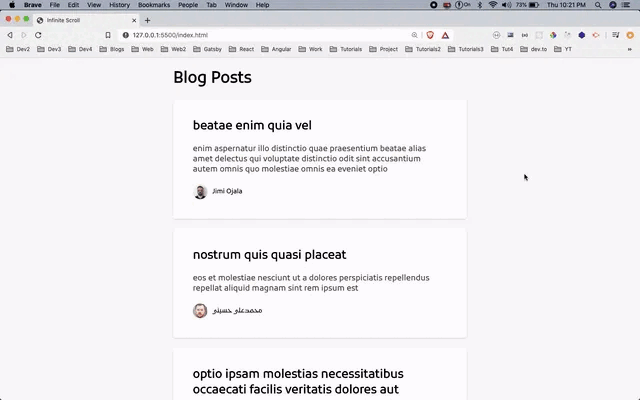

<p>Create a project in which you show a list of posts on the visible screen. 
Take this list of posts from an array or from an API call. Once the user scroll, 
it should show a nice loading bar and load the next set of posts. Refer to the GIF for the project.</p>


